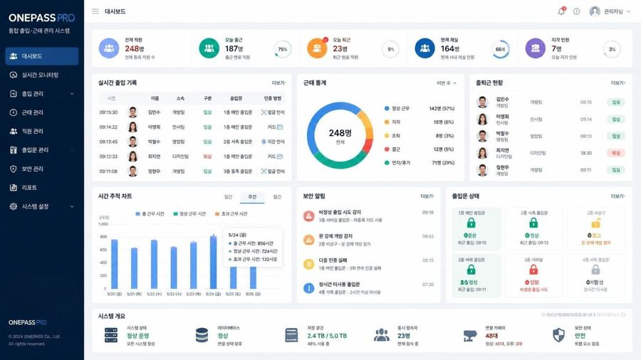
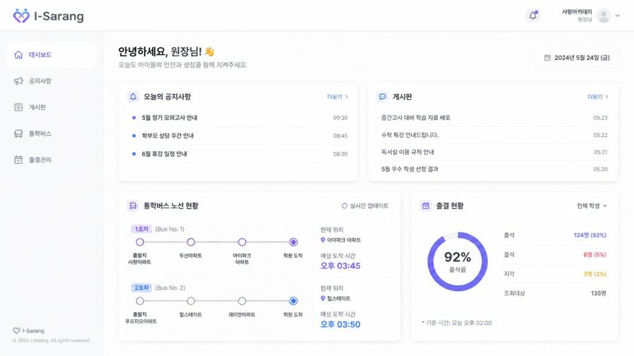

서버부터 화면까지
하나의 흐름으로 설계합니다.
실시간 하드웨어 연동, 결제 플랫폼, 클라우드 인프라를 거치며 복잡한 시스템을 안정적이고 확장 가능한 구조로 설계해 온 풀스택 개발자 김수만입니다. 도메인 주도 설계와 클린 아키텍처로 문제를 분해하는 일을 좋아합니다.
Focus domains
실시간 시스템 결제 플랫폼 IoT · 하드웨어
4+
년 실무 경력
9
설계·구현 프로젝트
차근차근 분해하고, 구조로 답합니다
처음 개발을 시작한 포커스에이치엔에스에서는 하드웨어와 맞물린 실시간 시스템을 다뤘습니다. 얼굴 인식 출입통제, 통학버스 관리, CCTV 관제, IoT 스마트팜까지 — 센서와 단말이 끊임없이 신호를 보내는 환경에서 안정적인 서버와 화면을 함께 만드는 법을 배웠습니다.
이후 더블다운인터액티브에서는 카지노 결제 플랫폼의 통합 결제 어댑터를 맡아 Xsolla·Google Play·Apple Pay를 Strategy/Factory 패턴으로 묶고, Resilience4j 기반의 회로 차단과 재시도로 결제 흐름의 견고함을 설계했습니다.
도메인 주도 설계와 클린 아키텍처에 오랜 관심을 두고 있으며, MSA 전환을 염두에 둔 구조 설계와 과도한 추상화 사이의 균형을 늘 고민합니다. 혼자 잘하기보다 팀과 함께 더 나은 결과를 만드는 과정에서 보람을 느낍니다.
주요 프로젝트

ONEPASS PRO
얼굴 인식 단말기 기반 통합 출입통제·근태관리 솔루션. 실시간 이벤트 처리와 WebSocket 모니터링을 적용했습니다.

아이스쿨
안심 통학버스 솔루션. GPS 추적, 승하차 알림, 학부모 실시간 알림으로 학생 안전을 지원합니다.
아슬란
CCTV·NVR 통합 관제 웹. 실시간 영상 스트리밍, 녹화 파일 관리, 이벤트 알림을 하나의 관제 솔루션으로 통합했습니다.
NestJS · PostgreSQL · Redis · WebSocket · Next.js
스마트쉘터
IoT 연동 스마트팜 시스템. 온습도 센서, 자동 급수, 환경 모니터링을 통합 관리합니다.
Java · Spring Boot · MySQL · WebSocket · MQTT
오늘알바
단기 일자리 매칭 플랫폼. 클린 아키텍처 기반 설계에 WebSocket 채팅, 카카오맵 연동을 더해 Railway에 배포했습니다.
NestJS · React Native · PostgreSQL · WebSocket
설비 자산관리 서비스
헥사고날·클린 아키텍처와 TDD 기반 Spring Boot 백엔드. 배정·정비·폐기 도메인을 JPA 인프라와 REST로 구현했습니다.
Java · Spring Boot · JPA · Hexagonal · TDD
주식 자동매매 시스템
전략 기반 자동 트레이딩 시스템. 시세 수집과 매매 전략 실행을 분리해 전략 교체와 백테스트가 쉽도록 설계했습니다.
Java · Spring Boot · 전략 패턴 · 시세 수집 · 자동화
30일 챌린지 앱
습관 형성을 돕는 30일 챌린지 플랫폼. 일일 체크인·뱃지·랭킹 시스템을 클린 아키텍처 기반으로 설계 중입니다.
NestJS · TypeORM · MySQL · React Native
뉴스 키워드 구독 서비스
구독 키워드 기반 뉴스 피드 서비스. DDD·클린 아키텍처·TDD로 설계하고 Redis 캐싱으로 성능을 튜닝했습니다.
Java · Spring Boot · Next.js · MySQL · Redis
핵심 기술 역량
Architecture
DDD, Clean / Hexagonal Architecture, MSA, CQRS, TDD
Databases
MySQL, PostgreSQL, Redis, MongoDB
Cloud & Realtime
AWS, Docker, WebSocket, Kafka, MQTT
Languages & Frameworks
Java, Spring Boot, Node.js, NestJS, React
경력과 배경
Work History
Backend Developer
2025 · 약 3개월더블다운인터액티브 (DDC2)
- check_circleXsolla·Google Play·Apple Pay를 통합하는 결제 어댑터를 Strategy/Factory 패턴으로 설계했습니다.
- check_circleResilience4j 기반 Circuit Breaker와 Retry로 결제 흐름의 안정성을 높였습니다.
Full-Stack Developer
2021.04 — 2025.09포커스에이치엔에스 · Smart Access 팀
- check_circleONEPASS PRO 얼굴 인식 출입통제 시스템을 개발했습니다.
- check_circleiSchool 통학버스, ASLAN CCTV 관제, 스마트쉘터 IoT 스마트팜 등 실시간 하드웨어 연동 서버를 구축했습니다.
Education
-
2023 — 2025
한국방송통신대학교
Computer Science (편입)
-
2020 — 2021
이젠아카데미
자바 웹&앱 개발자 과정
-
2015 — 2017
학점은행제 평생교육원
전문학사
-
2010
한세대학교
광고홍보학과 (중퇴)
Certifications
- SQLD · 2026
- AWS SAA · 2023
- 컴퓨터활용능력 2급 · 2022
- 정보기기운용기능사 · 2010
함께 좋은 시스템을 만들어요
새로운 기회나 협업 제안은 언제든 환영합니다. 편한 채널로 연락 주세요.